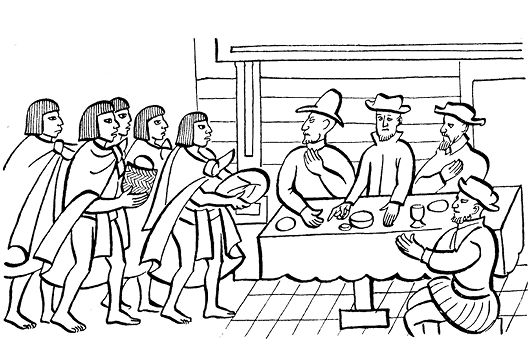
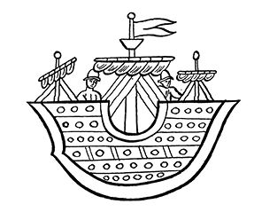

阿兹特克帝国驻华使馆
目录 |
第四章 蒙泰古祖玛的内心活动
导 言
从使者的汇报中蒙泰古祖玛得知了外来人到来的消息，以及他们所带的动物和其他的古怪东西，这使他更加茫然不知所措。萨阿贡实情提供者们还叙述了蒙泰古祖玛如何派遣各路魔法师和巫师以蛊惑西班牙人，以便叫他们不要靠近墨西哥-特诺奇蒂特兰。虽然困惑不解，蒙泰古祖玛还是倾向于相信他们是神祇，因此他派人把俘虏带到神祇们的面前，当场杀死，向他们献祭。萨阿贡实情提供者还向我们生动地讲述了西班牙人看到这一切时的反应。 这里所选文本还指出为什么征服者被印第安人叫成“神祇”：他们按照臆断，人为地想象某种形象，来解释外来人的，再按照传说把他们的到来归因为克查尔克阿特尔的归来。他们认为是天神克查尔克阿特尔自天而降，返回家乡了。 魔法师蛊惑西班牙人，企图让他们离开，但失败了。使者把这一情况报告给蒙泰古祖玛。 在墨西哥-特诺奇蒂特兰，蒙泰古祖玛和民众过着紧张而又恐惧的日子。来自汪洋大海另一侧的“神祇”或怪异的外来人威胁说他们要前往伟大的墨西卡都城。印第安人的记述还向我们描述了被困惑和犹豫折磨的蒙泰古祖玛的内心活动。最后，我们会看到特拉托阿尼1后来如何屈服：他控制自己内心的焦虑，坐待事情的发展。
蒙泰古祖玛派出魔法师和巫师
当时，蒙泰古祖玛组织了一个使团，派出了尽可能多的奇人、预言者和魔法师，他还派出了勇猛的武士和他们的首领。 这些人不得不给征服者带去必要的吃食：母鸡、鸡蛋、白饼2。 为了使他们（西班牙人）感到满意，他们还带着可能使他们感兴趣的其他东西。 蒙泰古祖玛还派人押送俘虏以供杀生献祭，也许他们想喝人血呢。使者们遵旨一一办理。  但是当他们（西班牙人）看到那些被害者的血，均恶心地呕吐起来。他们不住地眨眼，最后闭上眼睛，不停地摇头。带去的食品也溅上了血，西班牙人厌恶地将其扔在地上。食品散发着血腥味，就像腐烂的食物，令人作呕。 蒙泰古祖玛之所以派出使团是因为他认为这些外来人都是他崇拜的神祇，他历来崇拜天神。他把这些外来人叫作“自天而降的神祇”，把那些黑肤色的人叫作“脏神们”3。 这时征服者吃了白饼、鸡蛋、母鸡和各种水果，如： 树上的人心果（各式人心果）； 特松扎波特（曼密苹果）； 阿斯塔扎波特（白人心果）； 鸡屎扎波特（可能是小人心果）； 甘薯：瓜乌甘薯、波丝瓜乌甘薯（带褐色斑点的甘薯）、索契甘薯（褐色甘薯）、特拉帕尔甘薯（红甘薯）； 加拉巴木果、马萨索克尔特果（鹿果？）、西班牙李子（水中果）、沙尔索科特（番石榴）； 瓜乌吉罗特4、鳄梨、炮弹果、墨西哥山楂、柳叶野黑樱、仙人掌果、红仙人掌果、甜仙人掌果、人心果仙人掌果、水仙人掌果。 他们还给“大鹿”（马）带去了吃的东西：灰沙草草尖和其他割好的草料。 据说蒙泰古祖玛派出使者是为了让西班牙人看看这些使者都是些什么人，看看他们能否施魔法给西班牙人以伤害；看看他们能否向西班牙人吹气，使他们长出燎泡或类似的东西。 看看能不能向西班牙人念咒，让他们生病，或干脆死去，或让他们哪儿来回哪儿去。 使者们各司其职，与西班牙人交往，但是他们无能为力，一事无成。
蒙泰古祖玛获悉魔法师一事无成
最后，使者们匆匆而归，马上向蒙泰古祖玛汇报西班牙人的情况，说他们如何健壮勇猛： “我们根本不是他们的对手，我们无能为力！” 蒙泰古祖玛以死刑相威胁，愤怒地下令，力促他的总管、所有主要官员和指挥官仔细观察，看看西班牙人可能需要什么。 他们（西班牙人）从船上下来，最终决定行动起来，向城里开拔。他们沿着印第安官员来时的道路前进，并荣幸地受到了这些东道主周到的照拂：他们一路保护西班牙人，使他们行动一切顺利。
蒙泰古祖玛和百姓的焦虑
蒙泰古祖玛焦虑地思考着发生的事情，他魂不守舍，担心他的城市会发生什么不幸。所有人也都担惊受怕，惊恐万分。他们纷纷议论发生的事情。 人们一堆一圈地聚在一起，不停地谈论。人人垂头丧气，不停抽泣，甚至哭天喊地。他们一边哭着相互问安，相互慰藉，一面相互鼓励。他们相互抚慰，并安抚孩子们。 父亲们对孩子说： “唉！孩子们！……谁知在你们身上会发生什么事情！噢！要发生的事情，总会发生在你们身上的！……” 母亲们对孩子说： “我的孩子们！当你们看到就要在你们身上发生的事情时，你们该会多么的惊异呀！” 但是，人们相互碰面时也会诉说另一件事，并把此事禀告了蒙泰古祖玛，让他知悉此事后放下心来： “我们这里有一个讲纳瓦特尔语的女人，她一直陪伴西班牙人，名字叫马林辛，家住特提帕克，西班牙人在海边碰到了她……” 在这段时间，他们（西班牙人）在打探蒙泰古祖玛的情况：他是什么样的人？他是小伙子还是成年人？抑或是个老翁？他是个精力充沛的人还是一个年老体弱的人？也许他是个头发斑白的老人？ 印第安人向他们的“神祇”即西班牙人答道： “他是个成年人，不胖；他是个瘦人，甚至可以说是个骨瘦如柴的人，身体颀长。”
蒙泰古祖玛企图逃跑
当蒙泰古祖玛听到有人在打听他的情况，打探他本人的特点；当他知道“神祇们”想看看他的尊容时，他的心揪了起来，显得十分焦虑。他想逃跑，也做了逃跑的准备。他极想躲藏起来，让人看不见他。他想躲在某地，离“神祇们”远远的。 他在思考，想办法，策划着躲到某个山洞里。 他把他的想法告诉了他信赖的人。这些人说： “人们都知道，有个过世的名人居住的地方，即太阳宫，还有特拉洛克神5栖息之地和辛特里的宫殿（玉米女神庙）。陛下可选一个可意的地方去。” 蒙泰古祖玛有自己的想法，他想去辛特里的宫殿。 此事在民众之间流传开来。 但此事已经不可能实现。他已经无力藏身，他失去了躲藏的能力。他的行动不便，什么事情也做不来了。 巫师们的话折磨着他的内心，使他肝肠寸断。他曾经那么地信任这些巫师，曾经对他们那么的依赖，那么的言听计从。他变得萎靡不振，自己已经不能判断是否能够躲到他想躲的地方。 他内心明白，那就只好等待，只好听天由命了；他最终平息了内心的焦虑，关注着可能发生的可怕事情。6  |
|---|